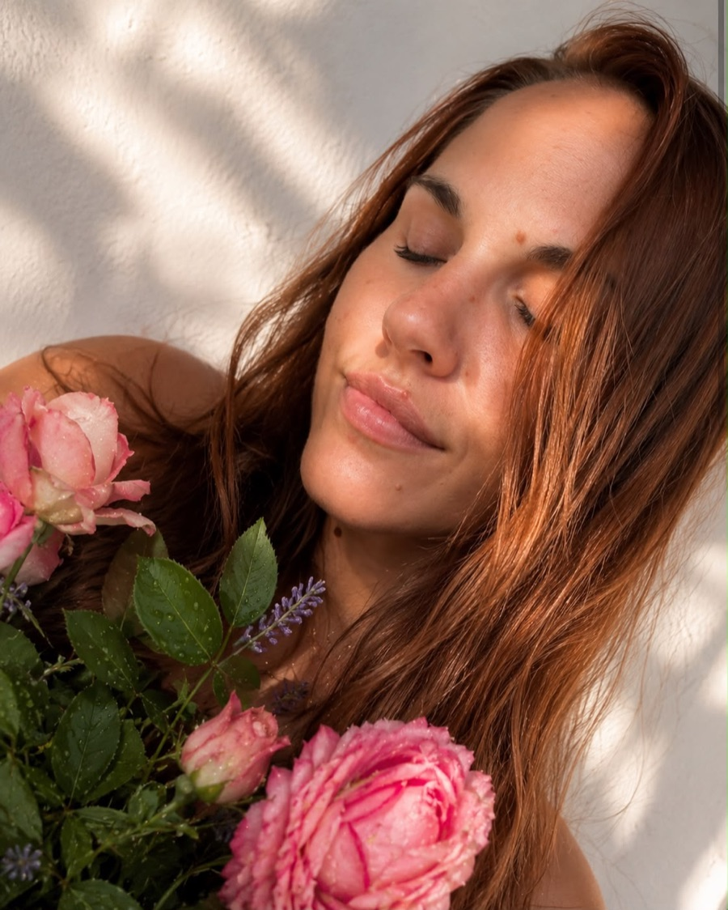
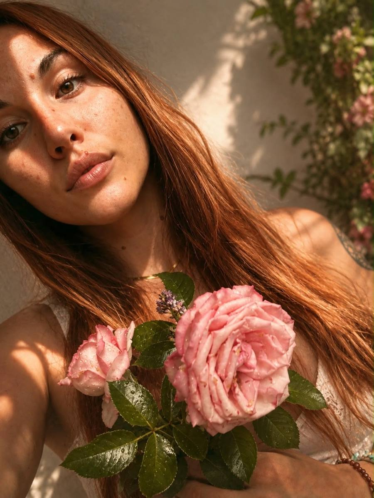
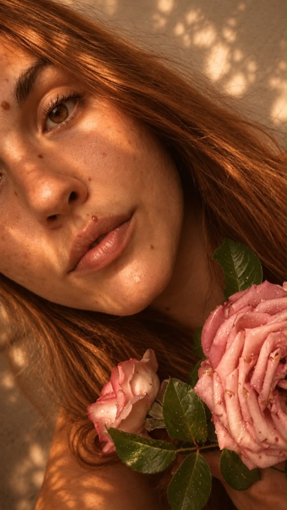

Astrochart
Dein Geburtsbild als innere Landkarte: es zeigt deine weibliche Signatur und deine Rhythmen.
✦Schwellentochter · weibliche Ritual- & Schwellenbegleitung
Manche Schwellen suchst du dir aus. Andere stellt dir das Leben vor die Tür. Ich begleite dich mit Ritual, Kerzenmagie und deinem Geburtsbild über diesen Übergang — bis du wieder spürst: Alles, was du brauchst, trägst du längst in dir.

Weich zu werden heißt nicht, schwach zu sein. ✦ Es heißt, den Kampf gegen dich selbst zu beenden.
Weiblichkeit ist kein Weg nach oben — sondern einer nach innen
Über mich · Schwellentochter
„Wahre Stärke entsteht nicht durch Kontrolle. Sie entsteht dort, wo wir wieder fühlen, wo wir weich werden dürfen — ohne uns selbst zu verlieren.“
Vielleicht kennst du das. Von außen funktioniert alles. Du hältst die Fäden zusammen, bist für alle da, machst weiter. Und trotzdem ist da dieses leise Ziehen — als hättest du dich selbst irgendwo unterwegs verloren. Eine Arbeit geht zu Ende, eine Liebe, ein Lebensabschnitt. Oder du merkst einfach, dass die alte Version von dir nicht mehr passt. Das ist eine Schwelle. Und an einer Schwelle musst du nicht allein stehen.
Ich nenne mich Schwellentochter, weil mein Weg mich immer wieder an genau diese Übergänge geführt hat. Eine Schwelle ist der schmale Grat zwischen dem, was war, und dem, was noch keinen Namen hat. In alten Bildern wacht dort Hekate — die Göttin der Türen, der Wegkreuzungen. Da ist mein Platz: neben dir, wenn etwas endet und etwas anderes beginnen darf.
So legst du Schicht für Schicht ab, was nie wirklich zu dir gehörte — und darunter zeigt sich, wer du ohne all das bist.
Anna
So begleite ich dich →Weiblichkeit leben
Es gibt keine perfekte Routine und kein Ritual, das dich plötzlich heilt. Es gibt nur deinen eigenen Weg — und ich begleite dich gerne dabei, ihn zu finden.
Weichheit ist kein Gegensatz zu Kraft — sie ist ihre tiefste Form. Deinen Körper nicht länger als Projekt zu sehen, das verbessert werden muss, sondern als dein heiliges Zuhause.
In eine gesunde Beziehung zu dir selbst und zu anderen treten: Grenzen setzen, ohne dein Herz zu verschließen. Langsamer werden, damit du dich selbst wieder hören kannst.
Auch die Astrologie schenkt uns Schlüssel: Dein Geburtsbild liest sich wie eine Landkarte deiner Kräfte und Rhythmen — und zeigt, wo deine Stärke sitzt, auch wenn du sie gerade nicht spürst.
Meine Werkzeuge
Ich verbinde körperorientiertes, ressourcen- und traumasensibles Wissen mit intuitiven Werkzeugen. Keine Wahrsagerei — Landkarten zu dem, was in dir ohnehin schon bereit ist. Und wenn dir Sterne, Karten oder Kerzen fremd sind: Du musst an nichts davon glauben. Es sind Wege zu dir, nicht mehr.
Dein Geburtsbild als innere Landkarte: es zeigt deine weibliche Signatur und deine Rhythmen.
✦Bilder, die eine Frage in Bewegung bringen und dir den nächsten Schritt zeigen.
✦Sanft geführte innere Reisen dorthin, wo Körper und Intuition wieder miteinander sprechen.
✦Seit über zehn Jahren besiegle ich Übergänge mit Kerzen; sie machen Veränderung sichtbar und spürbar.
✦Das Angebot
Stehst du an einem Übergang — an einem, den du dir wünschst, oder einem, in den das Leben dich gerade zwingt? Dann entsteht ein Ritual, das eigens für dich und für diesen Moment geschrieben wird.
Die Schwellenpost ist bewusst analog. Kein Login, kein Download, keine App. Ein von Hand gepacktes Päckchen kommt mit der Post zu dir nach Hause: Bienenwachs, dein Ritual auf Papier, alles zum Anfassen. In einer Zeit, in der eine KI dir in Sekunden ein Ritual ausspucken würde, ist das mein stilles Gegengewicht: langsam, echt, für dich gemacht.
Ich zeige dir, wie du es selbst gestaltest — abgestimmt auf deine Konstitution und deine Schwelle. Du gehst nicht mit einem Ritual aus unserer Begleitung, sondern mit der Fähigkeit, dir immer wieder eins zu schaffen.
Du schreibst mir in ein paar Sätzen, was dich gerade an deine Schwelle bringt — und, wenn du magst, deine Geburtsdaten.
In einem Video-Call schauen wir gemeinsam: Was endet gerade? Wohin möchtest du? Was darf sich lösen?
Ein individuelles Kerzenritual entsteht — ganz auf dich, deine Signatur und deinen Übergang abgestimmt.
Ein von Hand gepacktes Päckchen erreicht dich: Bienenwachs, alles für dein Ritual und deine Anleitung auf Papier.
Ein Begleit-Video zur Vor- und Nachbereitung nimmt dich an die Hand, damit du dein Ritual sicher und getragen selbst gestaltest.
Ein optionaler Nachbereitungs-Call und meine WhatsApp-Begleitung tragen dich über die Schwelle hinaus.
Schwellenpost
Enthalten sind der Video-Call, dein persönlich geschriebenes Kerzenritual, dein handgepacktes Päckchen mit Material und Anleitung, das Begleit-Video und meine WhatsApp-Begleitung.
Impressionen



Stimmen
Ich fange mit der Schwellenpost gerade an. Statt dir erfundene Zitate zu zeigen, sage ich es dir lieber ehrlich: Die echten Worte der ersten Frauen findest du hier, sobald sie ihren Weg gegangen sind. Was ich dir jetzt schon geben kann, ist meine volle Aufmerksamkeit — und ein erstes Gespräch, das dich zu nichts verpflichtet.
Der nächste Schritt
Ein geschützter Bereich mit Video-Impulsen und geführten Ritualen — in deinem eigenen Tempo, wann immer du sie brauchst.
Wer eine Schwellenpost erhält, kommt in einen kleinen Kreis — für gemeinsame Online-Mondrituale und Trance-Reisen, wenn wir zusammen sind.
Kontakt
Trag dich hier ein — magst du, gleich mit deinen Geburtsdaten und dem, was dich gerade bewegt. Ich melde mich persönlich bei dir und wir vereinbaren deinen Call. Kein Druck, kein Verkaufsgespräch.
Deine Angaben behandle ich vertraulich und nutze sie nur, um mich auf dich vorzubereiten. Diese Seite setzt keine Cookies und kein Tracking.